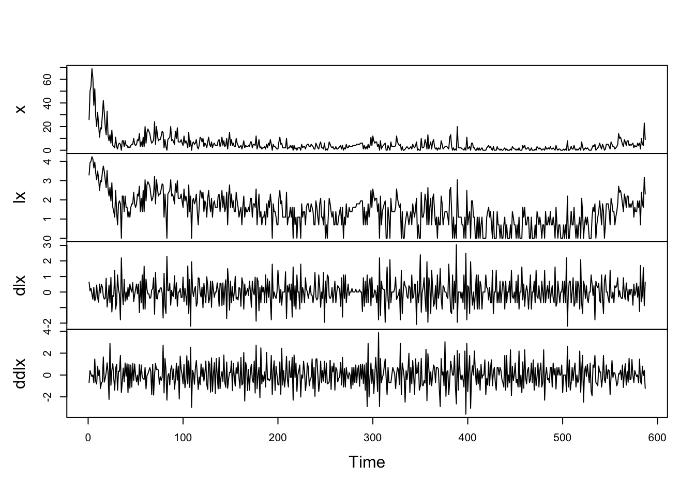
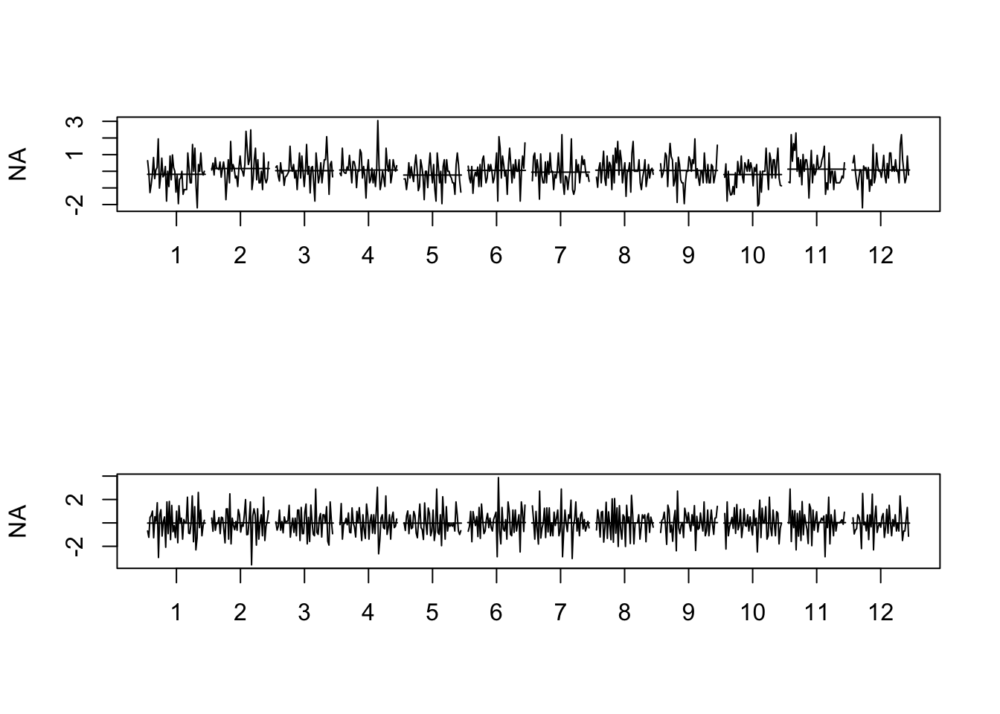
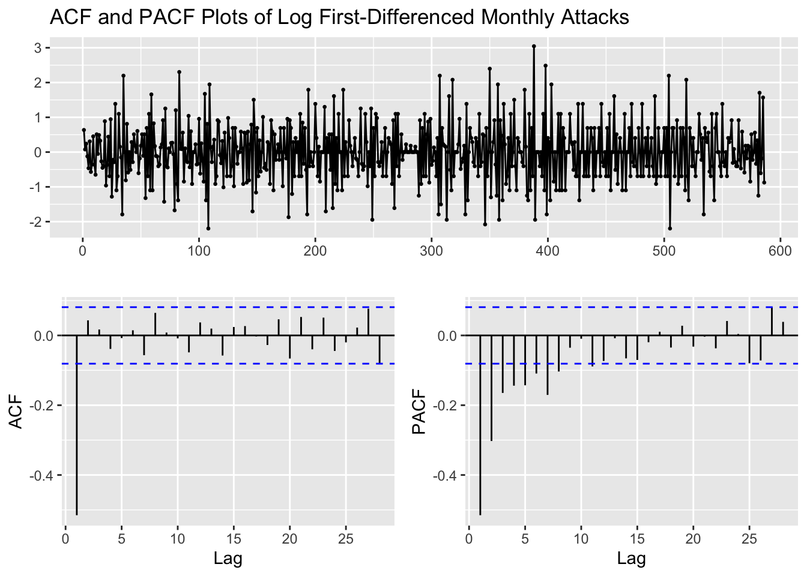
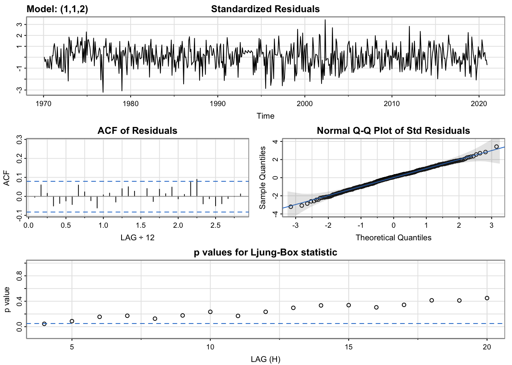
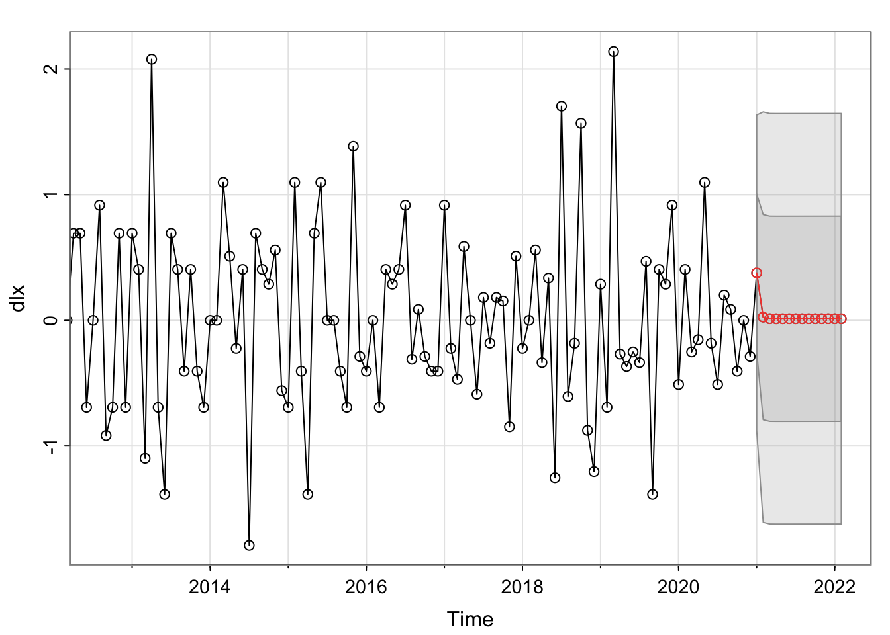
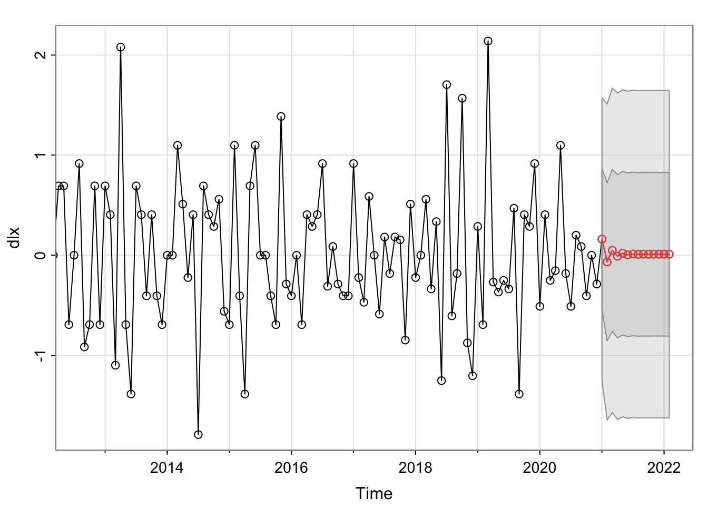
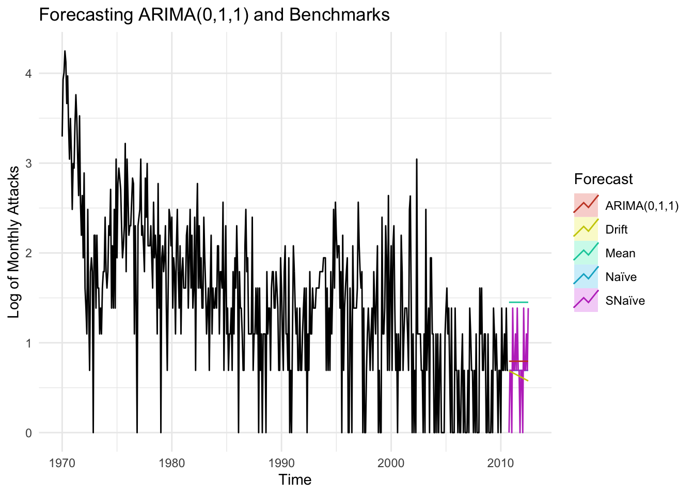

ARMA/ARIMA/SARIMA Models
Summary
After completing the exploratory data analysis (EDA) phase, the next step is to begin building time series models. In order to do so, one must first choose an appropriate model type, such as an ARMA (AutoRegressive Moving Average) model or one of its variations, including ARIMA (AutoRegressive Integrated Moving Average) or SARIMA (Seasonal AutoRegressive Integrated Moving Average).
An ARIMA model is generally notated as ARIMA(p,d,q) where p is the order of the AR process, d is the degree of differencing and q is the order of the MA process. The general equation of the model is given as follows:
\(\phi(B)(1-B)^d x_t = \delta + \theta(B) w_t\), where \(B\) is the backshift operator, \(w_t\) is the Gaussian white noise process, \(\delta\) is the drift term and \(\phi(B)\) and \(\theta(B)\) correspond to the AR and MA parts respectively.
Lag plots, auto-correlation function (ACF) and partial auto-correlation function (PACF) plots, decomposing the time series, and differencing are all useful techniques that were employed during the EDA phase to help inform the choice of model type and parameters. With a solid understanding of the data and its characteristics, one can begin to develop and refine time series models that can be used for forecasting.
Code for this section can be found here
Global Terrorism Database Time Series Modeling
ACF and PACF Plots of Monthly Attacks

ADF Test of Monthly Attacks
\(H_0\): The time series is non-stationary. In other words, it has some time-dependent structure and does not have constant variance over time.
\(H_1\): The time series is stationary.
Augmented Dickey-Fuller Test
data: monthly_attacks_ts
Dickey-Fuller = -7.3335, Lag order = 8, p-value = 0.01
alternative hypothesis: stationaryBecause the p-value from the ADF test is less than \(\alpha\) = 0.05, we reject the null hypothesis and conclude that the monthly attacks series is stationary. Although the ADF states that the original series is stationary, the ACF plots, which clearly indicate seasonality and trend, are more reliable than the ADF test. Therefore, it is safe to conclude that the series non-stationary as per the (ACF?) section above.
Log-Transformation of Monthly Attacks


Simply taking log of the number of monthly attacks does not make it stationary. First-differencing the log number of monthly attacks does, however, make the series stationary and this series should be employed for building our time series model. Keep in mind that because first-differencing was enough to make the series stationary, we do not need to second-difference it, helping us avoid over differencing the number of monthly attacks.
ADF Test of Log First-Differenced Monthly Attacks
\(H_0\): The time series is non-stationary. In other words, it has some time-dependent structure and does not have constant variance over time.
\(H_1\): The time series is stationary.
Augmented Dickey-Fuller Test
data: dlx
Dickey-Fuller = -13.177, Lag order = 8, p-value = 0.01
alternative hypothesis: stationaryBecause the p-value from the ADF test is less than \(\alpha\) = 0.05, we reject the null hypothesis and conclude that the log first-differenced monthly attacks series is stationary. Let us now check whether the ACF plots supports this hypothesis.
ACF and PACF Plots of Log First-Differenced Monthly Attacks

p values obtained from PACF are 1, 2, 3, 4 q values obtained from ACF are: 1 d (Difference): 1
Fitting ARIMA(p,d,q)
| p | d | q | AIC | BIC | AICc | |
|---|---|---|---|---|---|---|
| 2 | 1 | 1 | 2 | 1184.760 | 1206.827 | 1184.859 |
| 3 | 1 | 1 | 3 | 1187.562 | 1214.043 | 1187.702 |
| 6 | 2 | 1 | 2 | 1188.993 | 1215.473 | 1189.132 |
| 4 | 1 | 1 | 4 | 1184.796 | 1215.690 | 1184.982 |
| 10 | 3 | 1 | 2 | 1184.825 | 1215.719 | 1185.011 |
| 7 | 2 | 1 | 3 | 1188.316 | 1219.210 | 1188.502 |
| 11 | 3 | 1 | 3 | 1186.472 | 1221.780 | 1186.712 |
| 8 | 2 | 1 | 4 | 1188.815 | 1224.122 | 1189.054 |
| 12 | 3 | 1 | 4 | 1187.936 | 1227.657 | 1188.236 |
| 9 | 3 | 1 | 1 | 1250.578 | 1277.059 | 1250.718 |
| 5 | 2 | 1 | 1 | 1265.762 | 1287.830 | 1265.862 |
| 1 | 1 | 1 | 1 | 1319.040 | 1336.694 | 1319.106 |
Best Model in terms of AIC: p d q AIC BIC AICc
2 1 1 2 1184.76 1206.827 1184.859
Best Model in terms of AICc: p d q AIC BIC AICc
2 1 1 2 1184.76 1206.827 1184.859
Best Model in terms of BIC: p d q AIC BIC AICc
2 1 1 2 1184.76 1206.827 1184.859The best model with the lowest AIC, BIC, and AICc metrics is the ARIMA(1, 1, 2) model. The equation of the model is given by:
\(\begin{equation}(1-B)(1-B^1)y_t = \delta + (1+\phi_1B)(1-\theta_1B-\theta_2B^2)w_t\end{equation}\), where \((1-B)\) and \((1-B^1)\) are the differencing operators, which represent the first-order difference of the series. \(y_t\) is the time series, \(\delta\) is the drift term, \(\phi_1\) and \(\theta_1\), \(\theta_2\) are the parameters of the AR and MA parts, respectively, and \(w_t\) is the Gaussian white noise process.
Note that \(B\) is the backshift operator, which shifts the time series back by one period.
Model Diagnostics of ARIMA(1,1,2)

Standardized Residuals: Essentially stating that if the errors are white noise. The model does look stationary as it captures all the signals and essentially captures the raw white noise.
ACF Of Residuals: Auto-correlation of the residuals. The only q value to inspect is 1.
Q-Q Plot: The series follows a normal distribution pretty closely as even the tails seem to be on the normal line.
p values of the Ljung-Box statistic: Ideally, we would like to fail to reject the null hypothesis. That is, we would like to see the p-value of the test be greater than 0.05 because this means the residuals for our time series model are independent, which is often an assumption we make when creating a model. Since all lag values greater than 5 have a p-value greater than 0.05, our series is stationary.
Checking Model Output of ARIMA(1,1,2) with auto.arima()
Model metrics using auto.arima(): Series: monthly_attacks_ts
ARIMA(1,1,1)
Coefficients:
ar1 ma1
0.1389 -0.7431
s.e. 0.0645 0.0432
sigma^2 = 18.69: log likelihood = -1760.85
AIC=3527.7 AICc=3527.74 BIC=3540.95
Training set error measures:
ME RMSE MAE MPE MAPE MASE ACF1
Training set -0.154373 4.313143 2.764126 -Inf Inf 0.72581 0.01754544
Model metrics of ARIMA(1, 1, 2) using Arima(): Series: dlx
ARIMA(1,1,2)
Coefficients:
ar1 ma1 ma2
0.0327 -1.8568 0.8579
s.e. 0.0503 0.0299 0.0292
sigma^2 = 0.4: log likelihood = -589.26
AIC=1186.51 AICc=1186.58 BIC=1204.17
Training set error measures:
ME RMSE MAE MPE MAPE MASE ACF1
Training set 0.05076924 0.6304084 0.5003311 NaN Inf 0.5417286 -0.007967481From the above output, auto.arima() outputted an ARIMA(1,1,1) model, which is slightly simpler than the best model obtained with the Arima() function. In fact, the ARIMA(1,1,1) model was the worst model obtained using the Arima() function and that is noted in the table outputted in (best-fit?). This difference can be expected when using auto.arima() because it is not as reliable as the Arima() when building ARIMA models. The case is different when building SARIMA models, which is covered in the next section.
The best model outputted by Arima() performs significantly better than the model outputted by auto.arima() in terms of model selection metrics, including AIC, BIC, and AICc. Moreover, the best model outputted by Arima() also outperforms the model outputted by auto.arima() in terms of training set metrics, including RMSE, MAE, and MAPE. Although the auto.arima() model does well to closely match the best Arima() model by including a differenced order in its model and by choosing the right p or AR order, it does not select an additional MA order that would make the model more robust, as seen by the comparison of metrics. Some points to keep in mind when using these functions is as follows.
The auto.arima() function in R uses a stepwise algorithm to search through the space of possible ARIMA models and select the one with the lowest AIC value. While this approach can be computationally efficient and provide a good starting point for model selection, it does not necessarily find the best possible model for a given time series.
On the other hand, the Arima() function in R allows you to specify the exact order of the ARIMA model and can be used to fit more complex models, such as those with seasonality, exogenous variables, or other constraints. By specifying the exact order of the model, you have more control over the modeling process and can potentially obtain a better fit to the data.
In summary, the auto.arima() function can be a useful tool for quickly identifying a potentially good model, but it is not a substitute for careful model selection and customization using the Arima() function.
Forecasting ARIMA(1,1,2)

$pred
Jan Feb Mar Apr May Jun
2021 0.37759011 0.02555481 0.01273564 0.01231300 0.01234339 0.01239033
2022 0.01272329 0.01277086
Jul Aug Sep Oct Nov Dec
2021 0.01243788 0.01248544 0.01253301 0.01258058 0.01262815 0.01267572
2022
$se
Jan Feb Mar Apr May Jun Jul
2021 0.6282655 0.8166695 0.8168888 0.8168890 0.8168890 0.8168890 0.8168890
2022 0.8168890 0.8168890
Aug Sep Oct Nov Dec
2021 0.8168890 0.8168890 0.8168890 0.8168890 0.8168890
2022 From the above graph, we can note that the number of attacks will fluctuate anywhere between 0 to 6 (converting from log data) every month from 2021 to 2022, as per the 95% confidence bound. A spike is noticed for the first observed forecast after which the model does poorly to forecast the rest of the year. Since the ARIMA(1,1,2) is relatively simple, it is not as robust and complex to forecast more than a month into the future. The straight red line forecast after the first forecasted month suggests that 1 attack per month (converting from log data) would take place, an averaged out value. This is expected.
Moreover, the other suboptimal models outputted by Arima() also give the same forecast, so overlaying them onto the above plot would be redundant. It is, however, pragmatic to check whether the auto.arima() model’s forecast may forecast differently. Let us find out below.
Forecasting ARIMA(1,1,1) Outputted by auto.arima()

$pred
Jan Feb Mar Apr May
2021 0.160739303 -0.066511129 0.048747789 -0.009617016 0.020030951
2022 0.010443266 0.010418886
Jun Jul Aug Sep Oct
2021 0.005063770 0.012712754 0.008897226 0.010893251 0.009943302
2022
Nov Dec
2021 0.010486717 0.010273121
2022
$se
Jan Feb Mar Apr May Jun Jul
2021 0.7049204 0.7897960 0.8104291 0.8155169 0.8168849 0.8172028 0.8173013
2022 0.8173278 0.8173277
Aug Sep Oct Nov Dec
2021 0.8173181 0.8173267 0.8173267 0.8173278 0.8173276
2022 Like the previous forecast, we can note that, for the auto.arima() model, the number of attacks will fluctuate anywhere between 0 to 6 every month from 2021 to 2022 (again this is logged data), as per the 95% confidence bound. However, from the above plot, it can be discerned from red line that the auto.arima() model’s forecasts fluctuate more for the initial months’ forecasts than that of the Arima() model’s forecasts, which was smoother for the initial 2 months. Like the Arima() model’s forecasts, the the auto.arima() model’s forecast then lie on a single value, 1 attack per month, as the red line flattens out. Note that the output of the auto.arima() model was ARIMA(1,1,1), so it was expected that the forecast would be slightly less smoother than the ARIMA(1,1,2) model outputted by Arima(). This is attributed to the fact that ARIMA(1,1,2) has an additional Moving-Average term, which help make its forecasts smoother.
Comparing ARIMA(1,1,2) with Benchmarks

Best model metrics: Series: dlx
ARIMA(1,1,2)
Coefficients:
ar1 ma1 ma2
0.0327 -1.8568 0.8579
s.e. 0.0503 0.0299 0.0292
sigma^2 = 0.4: log likelihood = -589.26
AIC=1186.51 AICc=1186.58 BIC=1204.17
Training set error measures:
ME RMSE MAE MPE MAPE MASE ACF1
Training set 0.05076924 0.6304084 0.5003311 NaN Inf 0.5417286 -0.007967481
Snaive metrics: ME RMSE MAE MPE MAPE MASE ACF1
Training set -0.000351788 1.145667 0.9235824 NaN Inf 1 -0.5112064From the above plot, only the Snaive benchmark method’s forecasts seem more plausible compared to that of the ARIMA(1,1,2) model. The forecasts produced from the Snaive benchmark have the greatest amount of fluctuations or seasonality in a higher range of number of monthly attacks. However, the metrics paint a different story. The ARIMA(1,1,2) model’s training error measures are better than those of the Snaive benchmark. There are several reasons for this phenomenon:
Model Assumptions: The ARIMA model assumes that the data is stationary, which means that the mean and variance of the data do not change over time. If the data violates this assumption, the ARIMA model may not perform well. In contrast, the Snaive model does not assume stationarity, which may make it more robust to non-stationary data.
Parameter Estimation: The ARIMA model has three parameters (p, d, q) that need to be estimated, whereas the Snaive model has only one parameter (the seasonality). It is possible that the parameter estimation process for the ARIMA model was not optimal, leading to suboptimal forecast performance.
Forecast Horizon: The Snaive model may perform better than the ARIMA model for shorter forecast horizons, while the ARIMA model may perform better for longer forecast horizons. This is because the Snaive model assumes that the future values of the time series will be the same as the past values at the same time of year, which may be a reasonable assumption for short forecast horizons, but not for longer ones.